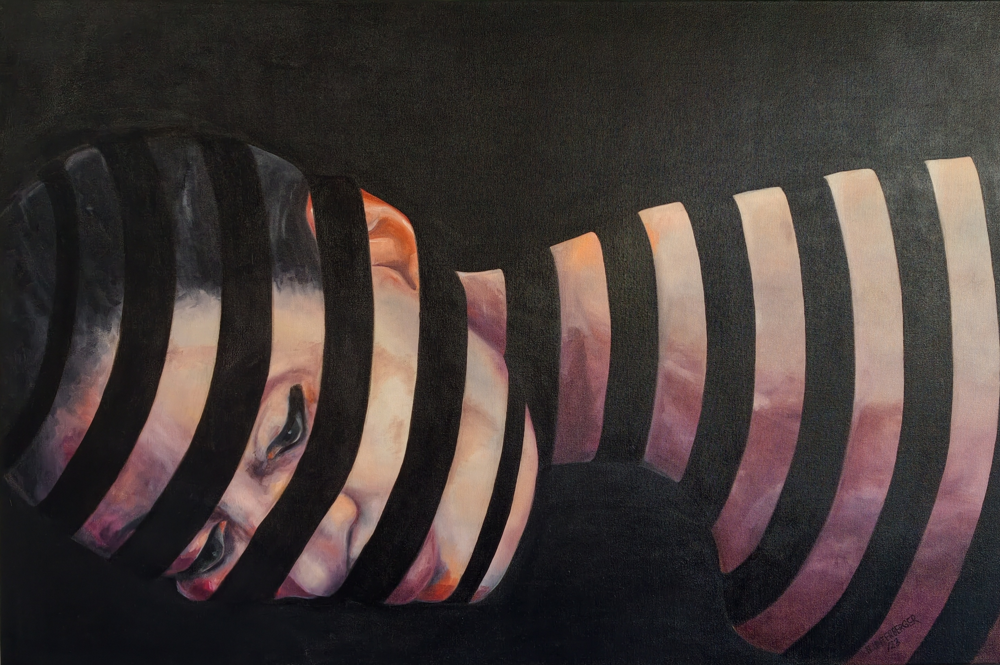

Öl auf Leinwand · 80 × 120 × 4,5 cm · 2023
Preis: € 3.600
In Tagtraum erscheint ein Gesicht, das sich dem Blick nur teilweise preisgibt. Dunkle, rhythmisch gesetzte Bögen schneiden durch das Porträt und lösen es in einzelne Bildfragmente auf. Haut, Auge und Mund treten hervor, verschwinden wieder und lassen das Gesicht zwischen Präsenz und Auflösung schweben. Die tiefschwarze Umgebung verstärkt diese Wirkung. Sie wirkt wie ein innerer Raum, in dem Gedanken keine feste Form annehmen müssen. Das Bild erzählt keinen konkreten Traum; es öffnet vielmehr einen Moment des Abschweifens, in dem sich Wahrgenommenes und Vorgestelltes überlagern. Der Blick wandert von Ausschnitt zu Ausschnitt und setzt das Gesicht im eigenen Sehen immer wieder neu zusammen. Tagtraum lädt dazu ein, kurz aus der äußeren Wirklichkeit herauszutreten und den flüchtigen Bildern des Inneren zu folgen.
In *Daydream*, a face emerges, revealing itself only partially to the viewer. Dark, rhythmically arranged arcs cut through the portrait, fragmenting it into separate visual elements. Skin, eye, and mouth come into view, then disappear again, leaving the face suspended between presence and dissolution. The deep-black surroundings intensify this effect. They appear like an inner space where thoughts need not take on a fixed form. The painting does not depict a specific dream; rather, it opens up a moment of reverie in which perception and imagination overlap. The viewer’s gaze moves from one fragment to the next, repeatedly reconstructing the face through the act of seeing. *Daydream* invites us to step away from external reality for a moment and follow the fleeting images of the inner world.